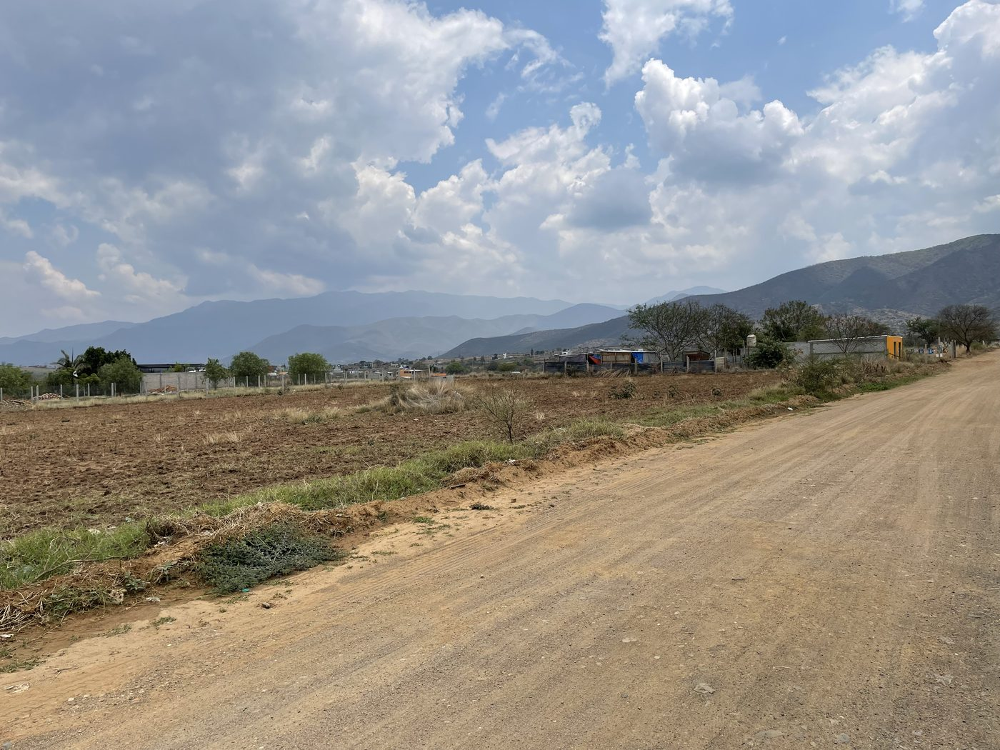
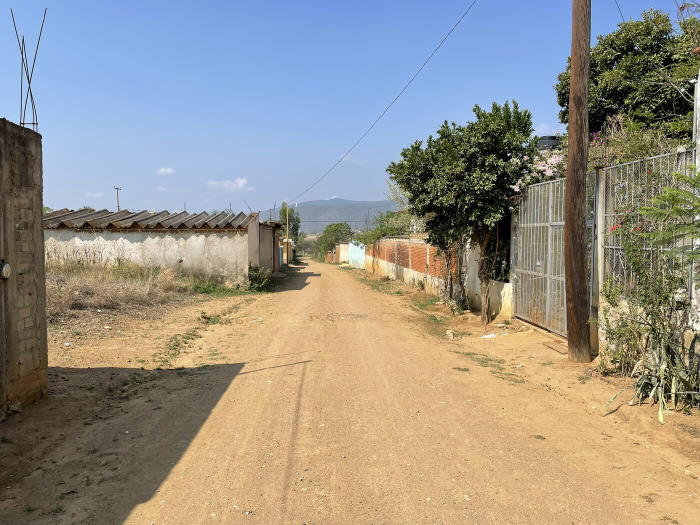
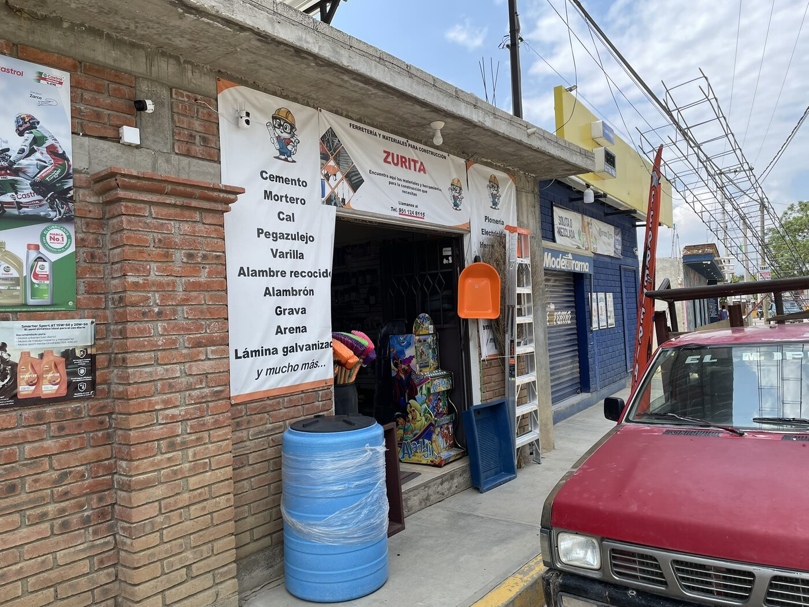
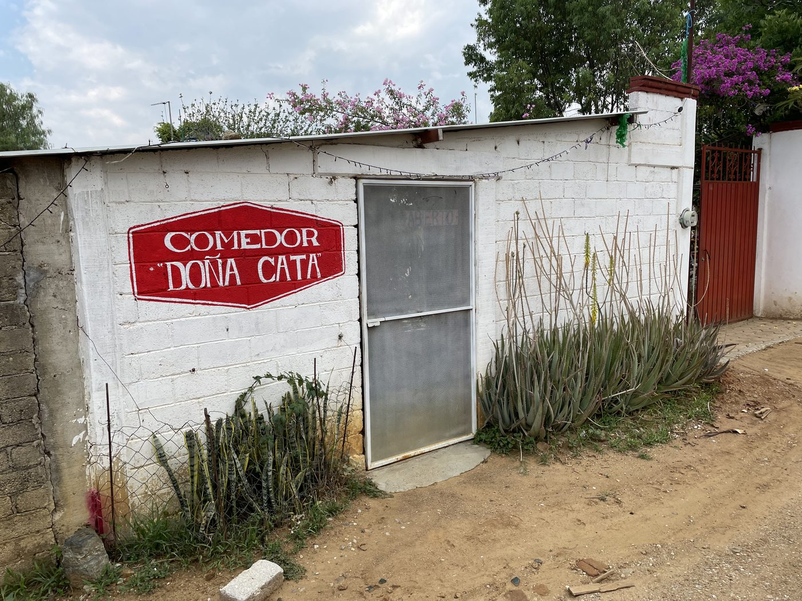
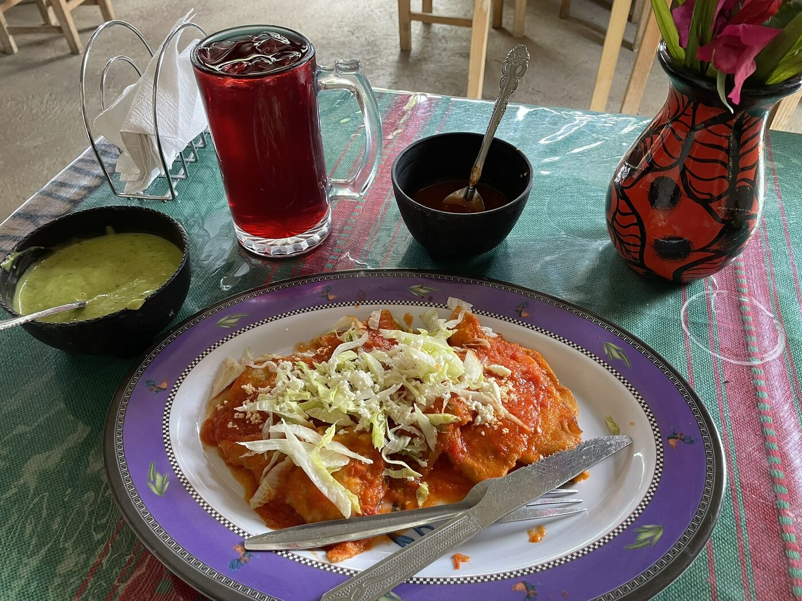
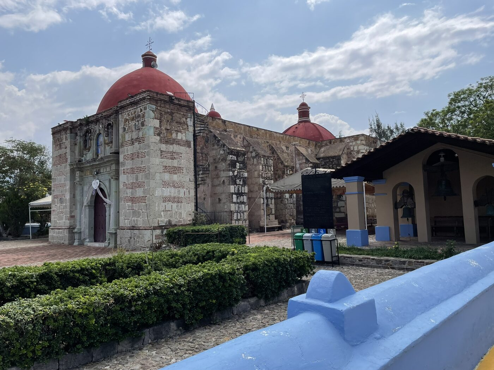
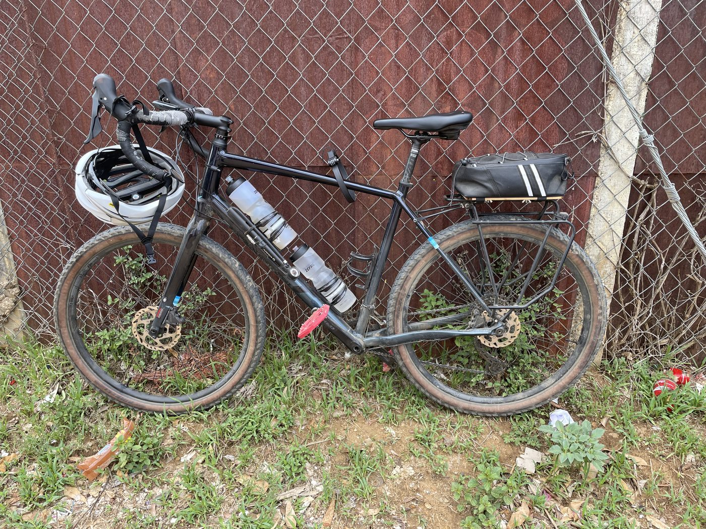

De Santa Catalina de Sena a San Francisco Lachigoló Santa Catalina de Sena to San Francisco Lachigoló
Hoy fue mi primer recorrido desde que me mudé al campo al oriente de la ciudad de Oaxaca. Llevaba mucho tiempo esperándolo. Me tomó casi un año reequipar mi bicicleta para rodar en caminos de terracería. Y también me tomó un tiempo ponerme en forma suficiente para pedalear con regularidad después de casi tres años sin bicicleta.
Today was my first ride since I moved to the countryside east of the city of Oaxaca. It's been a long time coming. It took nearly a year to reorganize my bicycle for riding on gravel roads. And it took some time to get in good enough shape to ride regularly after almost three years without a bicycle.

San Francisco Lachigoló es una ciudad muy pequeña, y Santa Catalina de Sena es una ciudad verdaderamente diminuta. Entre las dos hay principalmente caminos de terracería, que solo dan paso al pavimento cuando se entra formalmente a los límites de la ciudad. Es una forma hermosa de recorrer el campo, y hay algo muy disfrutable en los caminos de grava que lo diferencia tanto del ciclismo de montaña como del ciclismo de carretera. El camino es definitivamente todo, porque si no pones atención, vas a topar con algo que no quieres topar.

Estando en la ciudad más grande, recogí algunas cosas que necesitaba en una tienda de materiales muy pequeña, y luego me fui a un comedor local a desayunar tarde. La comida estuvo excelente y el ambiente también estuvo bastante bien.



Viajar por el México rural no es como viajar por un lugar como Japón o Tailandia. Las cosas son un poco más rústicas, sobre todo cuando se trata de los baños, pero uno se acostumbra. Lo bueno es simplemente estar rodeado de montañas, aunque esté rodando en una cuenca relativamente plana. Podría seguir y tratar de ser más poético, pero creo que unas pocas fotos pueden decir más que yo.

El único cambio que haría para el siguiente recorrido es salir más temprano. Salir más temprano normalmente implica planear la noche anterior, inflar las llantas la noche anterior, organizar lo que voy a llevar (principalmente agua y ropa) y tener la casa ordenada para no tener la tentación de hacer otra cosa que no sea pedalear.

Hoy ajusté este sitio web para que pudiera albergar esta primera entrada sin mucho esfuerzo, porque no quiero pasar mucho tiempo frente a la computadora, pero quiero tener una forma de repasar los pocos momentos hermosos que, para mí, valieron la pena fotografiar. Si logro salir temprano por la mañana, o quizás cerca del atardecer, los colores serán un poco más vivos. Esta parte de Oaxaca es un desierto de altura semiárido, pero es lo suficientemente tropical como para que se encuentren mangos y papayas creciendo incluso a esta altitud.
San Francisco Lachigoló is a very small city, and Santa Catalina de Sena is a truly tiny city. In between the two are mainly gravel roads. They give way to pavement only when formally entering the city limits. It's such a beautiful way to travel through the countryside, and there's something really enjoyable about gravel roads that is different than mountain biking or road cycling. The journey is definitely everything, because if you don't watch out, you're going to hit something you don't want to hit.
While in the bigger city, I picked up a few things I needed from a tiny hardware store, and then I headed over to a local comedor to have a late breakfast. The food was superb, and the atmosphere was pretty good too.
Traveling in rural Mexico is not like traveling in a place like Japan or Thailand. Things are a little more rustic, especially when it comes to the toilets, but you get used to it. The great thing is just being surrounded by mountains, even though I'm riding in a relatively flat basin. I could go on and on and try to be more poetic, but I think a few pictures can say more than I can.
The only change I would make for the next ride is to get started earlier. Usually, starting earlier means planning the night before, pumping up my tires the night before, getting whatever I'm going to carry organized (mainly water and my clothing), and then having my home organized so that I'm not tempted to do anything other than ride.
Today I tweaked this website so that it would easily host this first post without too much effort, because I don't want to spend much time at the computer, yet I want a way to look over the handful of beautiful moments that, to me, were photo-worthy. If I can get out early in the morning, or perhaps near evening, the colors will be a little more vibrant. This part of Oaxaca is a semi-arid high desert, but it's tropical enough that mangoes and papayas can be found growing even at this elevation.